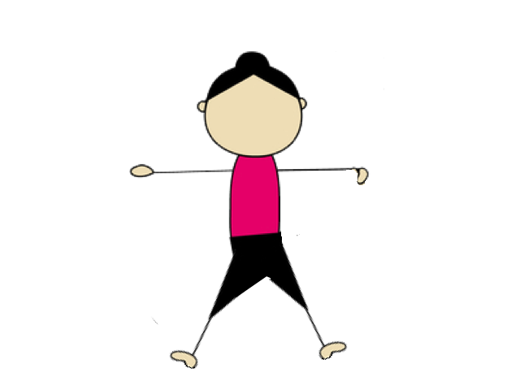

Cuentos para hacer Yoga

Marcos es un amigo mío. Es un niño que vive en una casa con patio, y que tiene una vida llena de aventuras cotidianas. Marcos tiene un súper poder, sabe que dentro de sí mismo, tiene una energía capaz de resolver cualquier situación, la energía del YOGA.


La Estrellita
Una noche cualquiera, Marcos estaba mezclando un colacao en su habitación, cuando de repente, oye en el patio de su casa un fuerte ruido. La verdad es que le dio un poco de miedo, porque fue un ruido extraño, pero él que es muy valiente, respiró profundo, bajo las escaleras con cuidado y abrió la puerta del patio. No podía creer lo que estaba viendo, era algo maravilloso, único, ¡nunca había viso algo parecido! Una estrellita bebe estaba en el medio de su patio, ¡su luz era maravillosa!

La pequeña estaba llorando asustada, y con una voz bajita le contó a Marcos que se había caído de los brazos de su mamá Estrella. Marcos tomó a la estrellita entre sus manos, y la puso en su corazón unos momentos, él sabe que el lugar donde mejor se siente uno, es reposando en el corazón. Luego de unos segundos, la estrellita se sintió mucho mejor. Entonces entre los dos empezaron a buscar la manera para que la pequeña vuelva al cielo con su mamá Estrella.

Marcos sabe que con la energía del Yoga se pueden solucionar todo tipo de problemas, entonces le propuso a la estrellita hacer yoga, para que con esa energía, puedan dar con la solución. Empezaron haciendo la postura de la roca, pensaron que si la estrellita se subía a una roca, podrían llegar al cielo. Marcos se sentó sobre sus talones con su espalda recta y puso suavemente sus manos en el regazo. Marcos pudo ver la maravillosa luz de la estrellita subir, pero... cayó nuevamente al patio. Falta un poco más de energía del yoga.

Entonces a Marcos se le ocurrió hacer la postura de molino para crear viento que elevara a la pequeña al cielo. Se paró con las piernas separadas, extendió los brazos en cruz y con una mano toco el suelo mientras la otra tocaba el cielo, luego cambió de lado, lo hizo tres veces para cada lado. Y, ¿sabes qué? ¡Generó un montón de viento! Vio la luz de la estrellita subir y subir, pero cuando estaba casi por llegar, se quedó sin viento y volvió a caer al patio de Marcos. La pequeña echó a llorar, extrañaba mucho a su mamá.
Entonces Marcos, se sentó en el suelo en postura de loto, la tomó entre sus manos y la llevó a su corazón. Se quedó unos momentos contemplando la luz tan maravillosa de la estrellita brillando en su pecho. Y entonces encontró la solución. ¡Había que llamar a la Mamá Estrella! Se concentró mucho pensando en La Estrella. De pronto todo el cielo se llenó de luz, es el mismo color que la luz de la estrellita. ¡Su Mamá bajaba del cielo a buscarla!

Al ver a su hijita llorar, la tomó entre sus manos y la llevó a su corazón diciéndole que ella nunca la había abandonado, puesto que comparten la misma luz. Antes de marcharse en agradecimiento le dejaron a Marcos la luz de la estrellita brillando en el pecho. Una luz que lo acompaña por siempre.
La Felicidad Perdida
Una tarde, Marcos volvió del cole a su casa y al entrar, notó algo muy extraño. Todo era triste, la cara de su mamá, de su papá, las plantas, las frutas y hasta el gato estaban tristes. Se había perdido la felicidad en su casa. Marcos sabía que era un problema para solucionar con la energía del yoga.


Pensó que tal vez la felicidad la había robado una ranita que andaba saltando por su patio, entonces hizo la postura de la rana, se puso de cuclillas y saltó por todo el patio, pero ahí la felicidad no estaba. Se le ocurrió que tal vez la felicidad la tenía la Luna, que la noche anterior apareció en el cielo como una sonrisa. Entonces se puso de pie con las piernas juntas, junto las palmas de sus manos con los brazos extendidos encima de su cabeza e inclino su torso hacia un lado y el otro.

Busco la felicidad en la media luna, pero no la encontró. Marcos se estaba desanimando, entonces se sentó en loto un momento para sentir la luz que le había regalado la estrellita, eso siempre lo hacía sentir mejor. Y cuando estaba viendo en su pecho esa maravillosa luz, se dio cuenta que ahí estaba la felicidad, ¡Adentro suyo!
Llamó a su mamá y papá, al gato y se sentaron en ronda. Cada uno se concentró en su corazón y en seguida encontraron la felicidad, que se extendió por toda la casa.

EL Pájaro del ala rota
Una noche Marcos estaba terminando su colacao cuando escuchó un ruido muy extraño en su patio. Bajó con valentía las escaleras y al abrir la puerta, vió un pájaro con el ala rota. Se acercó y notó que el pobre no podía volar con el ala así. Entonces supo que la solución era la energía del yoga.

Primero tomó al pájaro entre sus manos y lo llevo a su corazón para que se sintiera mejor y no le doliera tanto su ala lastimada. Luego se le ocurrió ir a buscar agua sanadora de una cascada mágica. Hizo la postura de la cascada. De pie, juntando las piernas y las palmas de las manos con los brazos extendidos por encima de su cabeza, inclinó su torso para atrás llenando su tripita de aire y repitiendo su palabra mágica. Consiguió un poco de agua sanadora con la que acarició el ala rota, y al instante se curó. Pero el pájaro ahora tenía miedo de volar, no quería volver a lastimarse.

Marcos pensó que si subía a la montaña más alta y le mostraba al pájaro el hermoso cielo, eso lo animaría a volar. Se puso de pie con las piernas juntas, las palmas de las manos hacia el frente y los brazos un poco separados del cuerpo. Cerró sus ojos contemplando ese maravilloso cielo, lleno su tripita de aire fresco de montaña. Pero el pájaro todavía tenía miedo.

Entonces Marcos pensó que tal vez si volaba junto al pájaro, le daría la confianza necesaria para volver a tomar vuelo. Se puso de pie con los brazos extendidos un poco hacia atrás y se paró en las puntillas de sus pies. Subía y bajaba de las puntillas al suelo, cuando de pronto salió volando y vio que el pájaro lo seguía. Qué felicidad! El ala estaba curada y el pájaro volvió a volar!

Posturas

Roca
Siéntate sobre tus talones. Mantén la columna recta. Apoya las manos sobre las rodillas. Respira largo y profundo.

Guerrero
Inicia en una posición de pie. Separa tus piernas el largo de una de ellas. Rota un pie a 45 grados y el otro a 90. Extiende los brazos paralelos al suelo. Flexiones la rodilla del pie a 45 grados hasta que quede sobre el tobillo. Tus ojos miran el dedo medio de la mano. Mantente unas reparaciones y cambia de lado.
Bote
Siéntate con las piernas estiradas hacia el frente. Levanta las piernas y los brazos manteniendo el equilibrio y poniendo fuerte el abdomen. Las palmas se miran.
Perro Boca Abajo
Colocare en cuatro apoyos, muñecas a la altura de los hombros, rodillas a la altura de las caderas. Inhala y empujando suelo con las manos estirando las piernas. Mírate el ombligo.
Cobra
Acuéstate boca abajo, las manos bajo los hombros. Eleva el pecho. Inclínate suavemente hacia atrás y endereza los brazos. Respira lento y profundo.
Cascada
Inicia en posición de pie. Los pies paralelos entre sí, abiertos el ancho de caderas. Estira los brazos por encima de la cabeza. Estira la coronilla hacia el cielo e inclínate suavemente hacia atrás inhalando.

Loto
Siéntate como un yogur, la espalda recta. Junta el dedo índice y el pulgar y extiende los otros tres dedos. Apoya las manos sobre las rodillas. Respira lento y profundo.
Molino
Inicia en una posición de pie. Separa los pies un poco más que el ancho de tus caderas. Extiende los brazos en cruz, las palmas hacia abajo. Inhala e inclínate hacia la derecha. Exhala y sube. Inhala e inclínate hacia la izquierda.
Montaña
Inicia en una posición de pie. Levanta los dedos de los pies y ábrelos, luego apoyarlos sujetándose del suelo. Espalda recta. La coronilla hacia el cielo. Siente la fuerza de la montaña

Bebe
Siéntate sobre tus talones en la postura de la Roca, desciende y lleva la frente a la tierra. Estira tus brazos hacia adelante o mantenemos al costado del cuerpo. Inhala y exhala profundo escuchando el latido de tu corazón.
Rana
Siéntate de cuclillas, con los talones juntos sin tocar el suelo. Coloca la punta de los dedos de las manos en el suelo, entre las rodillas. Mira hacia el frente. Inhala y eleva tus caderas, estirando las rodillas sin despegar los dedos de las manos del suelo. Exhala y baja.
Avión
Parado con los pies juntos estira una pierna hacia atrás y los brazos hacia adelante. Respira profundamente manteniendo el equilibrio. Cambia de pierna.
Arbol
Inicia en una posición de pie. Sube el talón derecho a la ingle, estira los brazos tocando las orejas, con las palmas juntas. Respiración lento y profundo repite cambiando de pierna.
Pájaro
En la posición de montaña ponte de pinturas de pie llevando los brazos hacia atrás como si fueran alas. Sube y baja repetidas veces. Inhala al subir, exhala al bajar.
Luna
Inicia en posición de pie, con los pies juntos y los brazos juntos, en la postura de Montaña. Eleva los brazos abrazando las orejas. Dobla tu torso hacia un lado y hacia el otro. Respira profundamente.

Elefante
Párate con las manos en la cintura y eleva una pierna manteniendo la espalda recta. Respira profundamente alternando de pierna.